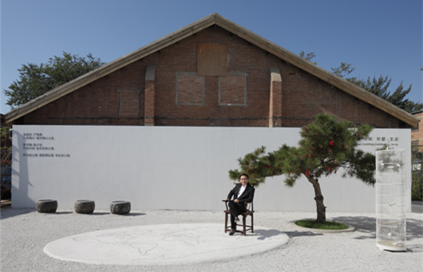

创始人介绍

姬赟，一个地地道道的西北汉子——正直、朴实、真挚。从小受正统家庭的教育，对中国传统文化有着浓郁的感情。他，注重事物“本来”的样子，不喜欢过多的修饰和装扮；他，注重自身正能量的积累，并将这种特质传递给周边的每一个人；他，更愿意关注和深挖事情的本质，而非只是留意表面的肤浅。
2007年，姬赟开始筹备建立“闳约”品牌，并以室内设计公司的形式进行市场运作，打响品牌第一炮。2008年，姬赟提出“放松文化”的理念，获得客户认同。姬赟一直认为，从使用者的角度去考虑问题，设计师研究的是人，而不是空间。他相信，一个“懂你”的设计，必然会给客户带来放松的感觉：放松的家，会让居住者有一颗迫不及待回归的心，能够卸下在外的重担；放松的公共空间，会让每一个使用者都能摆脱俗世的喧嚣。2009年，因作品频频获奖，姬赟被行业誉为“获奖专业户”。2010年，“闳约”品牌旗下闳约国际设计扩大运营规模，办公室新址面积近三千平米，全职员工近百人。除此之外，姬赟早期的作品再度被炒热，因其进行的设计，客户在转卖住宅时达成的价格，成为该住宅所在区域的新高。
2011年，姬赟远瞻市场，开始酝酿“闳约HONYO”大品牌战略。经过一年的筹备，2012年，“闳约HONYO”大品牌战略提上日程——闳约国际设计全面转型，自此“闳约HONYO”大品牌下囊括：文化、艺术和设计。可以说，“闳约HONYO”大品牌的建立，是姬赟的圆梦之举——自闳约国际设计创办之日起，姬赟就一直在避免走家装公司和装饰公司的老路。他对整个行业有着透彻的体悟和独到的见解，他认为好的设计一定是来源于丰沛的文化底蕴和丰厚的艺术鉴赏力。所以，这一步步的坚持，才有了今天华丽转身的“闳约HONYO”。
姬赟始终坚信，文化做引导，艺术为支撑，设计是表现。大品牌战略后的“闳约HONYO”一定会有一个不一样的蜕变，期待姬赟下一个大手笔！